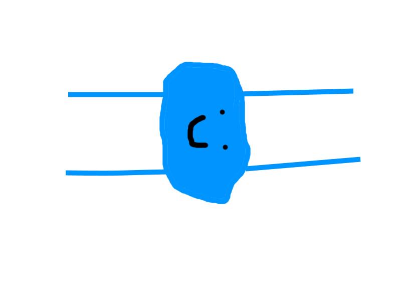
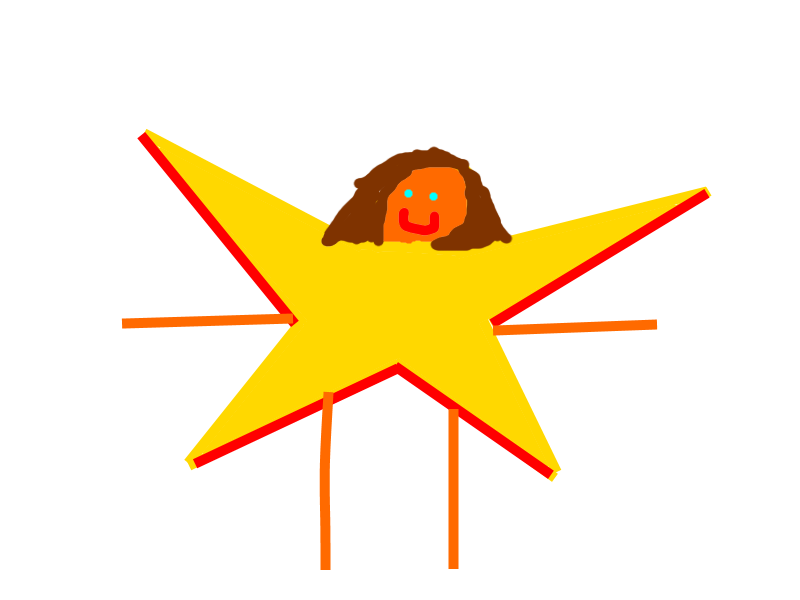
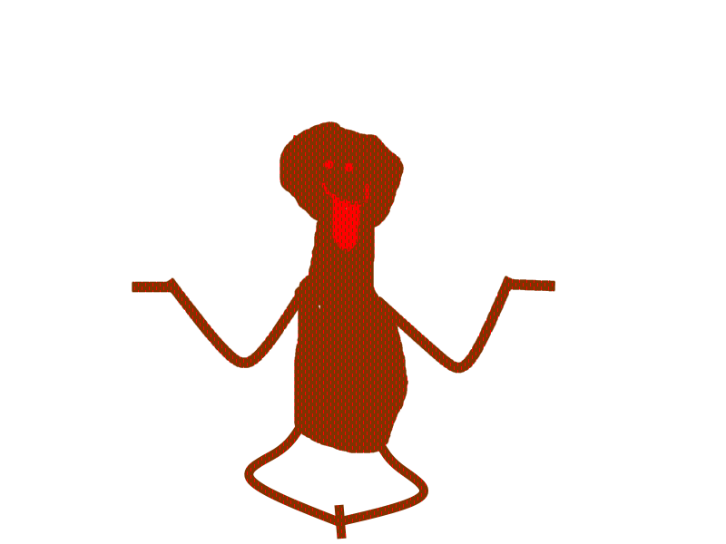
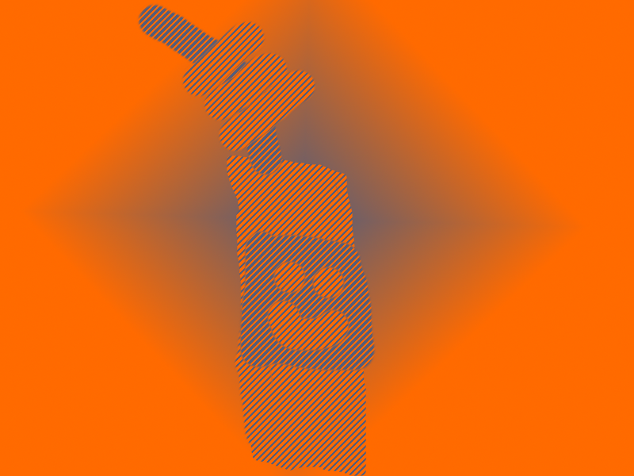
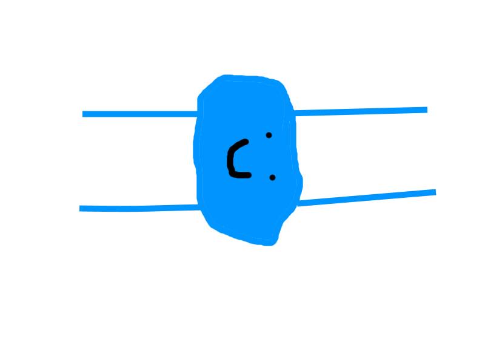
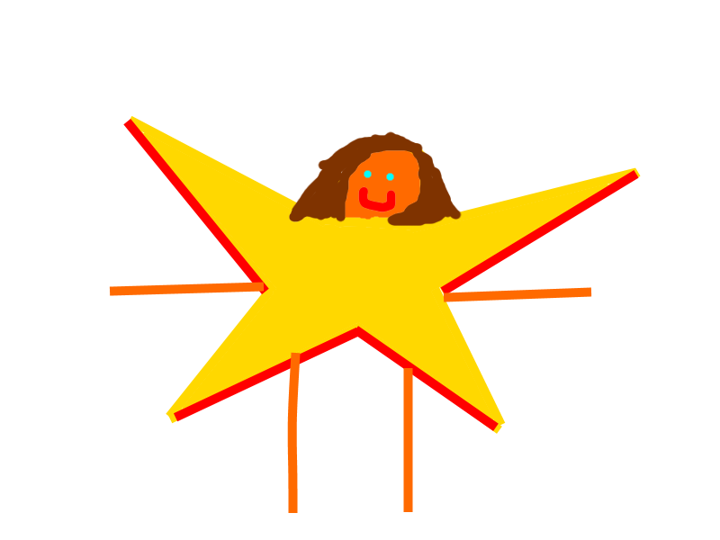
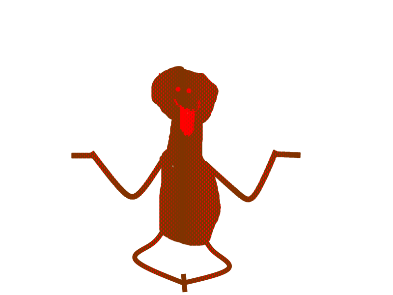
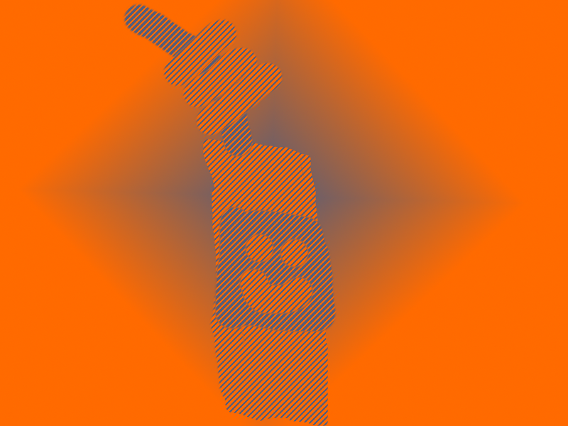

img src="code_pictures1/med.png" style="width:100px" alt="">

You can play with Nim whenever you like,by yourself or with a friend.The Nim Captains are the CHILDREN that made Nim up.They are Itamar GamlielandEleanor Gamliel. The`re Helper is Naomi Gamliel.You can talk about Nim every day,like the Nim Captains,or,if you prefer,play with them every once-in-a-while.
The Nim Captains would want you to play with Nim day and night, night and day,like THEY do!You might get to make up your own kind of Nim,or,even better,you might become a NIM CAPTAIN HELPER!!!!!!!!!!!!!!Here is a list of the most common Nim:



img src="code_pictures1/med.png" style="width:100px" alt="">
